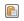
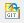

Cloning Initial Branches of Git Repository into Eclipse Workspace
Context
You perform this task to clone the
<TenantID>_Dev / <TenantID>_Test branch of the Git Repository in the local
Eclipse workspace so that you can start developing the integration content. The SaaS
Admin may either give you url of the project portal or Git Repository link that looks
like ssh://<I/D user>@git.wdf.sap.corp:29418/<project>.git
Procedure
If the SaaS Admin has provided you with the URL of the project for the Git Repository,
perform the steps below: This URL is the web link to the SAP Project Portal page which contains the
details of the new Git Repository.
Click on the web URL to open the SAP Project Poral page in the web
browser.
In the SAP Project portal, under the Development
Information section, copy the Git Repository link to
clipboard by clicking on (Copy to Clipboard icon) at the end of the URI.
Note Example of an
URI: ssh://<I/D
user>@git.wdf.sap.corp:29418/<project>.git
If the SaaS Admin has provided you directly the URI of the Git Repository that
looks like ssh://<I/D user>@git.wdf.sap.corp:29418/<project>,
copy it to your clipboard.
Switch back to Eclipse IDE.
In the main toolbar, choose Window Open Perspective Others....
In the Open Perspective dialog, select Git
Repository Exploring.
From the toolbar of the Git Repositories view, choose ( Clone a Git Repository and add the clone to this
view icon).
Choose Next.
In the Local Destination page of the wizard, select the
initial branch to work with.
In the Clone Git Repository dialog, select the
<TenantID>_Dev/ <TenantID>_Test branch from the Git
Repository to the cloned repository in your workspace and choose
Next.
Check if the location points to <HOME> (your user directory, for example,
C:\Users\<SAP_ALL ID>\...\).
Select the Initial Branch as the <TenantID>_Dev /
<TenantID>_Test branch to work with.
Choose Finish.
Results
In the Git Repositories view, you can expand your cloned
repository and view that the <TenantID>_Dev / <TenantID>_Test branch of the
Git Repository is cloned in your workspace.
 Window
Window  Open Perspective
Open Perspective  .
.